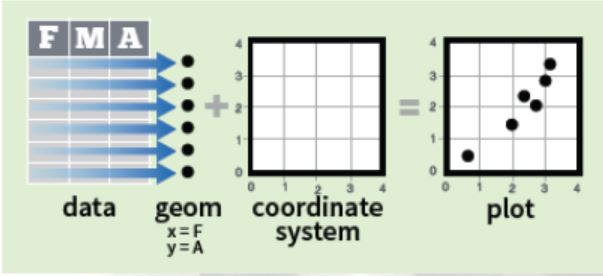
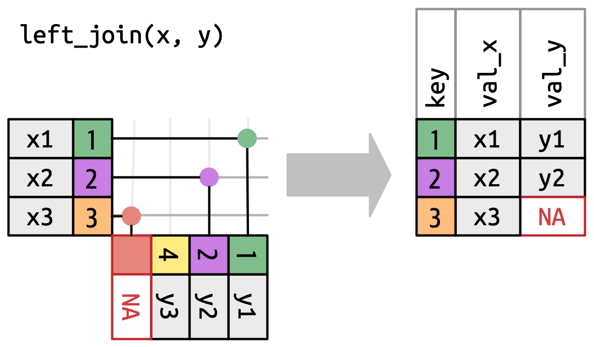

Tidyverse
Introducción
Tidyverse es el nombre que se ha dado al conjunto de paquetes desarrollados a partir de la inciativa de Hadley Wickham (jefe científico de Posit -antes RStudio-) y su equipo, para ciencia de datos con R.
Estos paquetes están diseñados para funcionar juntos y comparten una misma filosofía, que se puede consultar en The tidy tools manifesto.
Los cuatro principios básicos en los que se basa son:
- Reutilizar las estructuras de datos
- Resolver problemas complejos combinando varias piezas sencillas
- Utilizar programación funcional
- Diseñado para humanos
Los paquetes incluidos en el tidyverse tienen como objetivo cubrir todas las fases del análisis de datos dentro de R: importar datos, ponerlos en formato ordenado (tidy data), buscar relaciones entre ellos (mediante su transformación, visualización y creación de modelos) y comunicar los resultados.
La palabra “tidy” se puede traducir como “ordenado” y refiere a que los datos deben cumplir con una estructura determinada donde:
- Cada variable es una columna de la tabla de datos.
- Cada observación es una fila de la tabla de datos.
- Cada tabla responde a una unidad de observación o análisis.
Además de los paquetes principales que realizan estas funciones, al instalar el tidyverse también se proporcionan otros que ayudan a trabajar con fechas, cadenas de caracteres o factores siguiendo los mismos principios.
Una de las interesantes incorporaciones transversales en el ambiente tidyverse es el uso de tuberías (pipe en inglés).
Una tubería conecta un trozo de código con otro mediante el conector %>% que surge del paquete magrittr que permite transformar llamadas de funciones anidadas (con muchos paréntesis) en una simple serie de operaciones que son más fáciles de escribir y comprender. Este aporte fue tan importante que el equipo de desarrolladores que mantiene el lenguaje R incorporó la idea a partir de la versión 4.1.0 de 2021, agregando la funcionalidad nativa con el operador |>.
Nota: durante el curso pueden llegar a coexistir ambas tuberías, dado que funcionan igual. De todas maneras, al utilizar versiones actualizadas del lenguaje preferimos utilizar la tubería nativa que es más eficiente que la propia del tidyverse.
La idea de tubería responde al principio donde cada función es un paso y la forma de trabajar se puede ver en el siguiente esquema general:

Base gramatical
La intención de los desarrolladores para este conjunto de paquetes es lograr incorporar una gramática a la sintaxis de las funciones y sus argumentos buscando un entendimiento semántico más claro.
Una prueba de ello, es que la mayoría de las funciones son verbos que se entrelazan con objetos y argumentos que permiten construir “frases”.
El paquete de paquetes
El paquete tidyverse nucleo actual (versión 2.0.0) se puede descargar del repositorio oficial CRAN mediante menú Packages de RStudio o ejecutando en consola:
install.packages("tidyverse")Se activa, como cualquier otro paquete, mediante:
library(tidyverse)── Attaching core tidyverse packages ──────────────────────── tidyverse 2.0.0 ──
✔ dplyr 1.1.4 ✔ readr 2.1.5
✔ forcats 1.0.0 ✔ stringr 1.5.1
✔ ggplot2 3.5.1 ✔ tibble 3.2.1
✔ lubridate 1.9.3 ✔ tidyr 1.3.1
✔ purrr 1.0.2
── Conflicts ────────────────────────────────────────── tidyverse_conflicts() ──
✖ tidyr::extract() masks dlookr::extract()
✖ dplyr::filter() masks stats::filter()
✖ dplyr::lag() masks stats::lag()
ℹ Use the conflicted package (<http://conflicted.r-lib.org/>) to force all conflicts to become errorsObservamos que nos informa sobre la versión del paquete, el listado de paquetes que acabamos de activar sólo llamando a tidyverse y una serie de conflictos de nombres de funciones.
Esto es muy habitual cuando activamos varios paquetes, dado que las funciones que se encuentran dentro de ellos pueden llamarse iguales.
Por ejemplo, existe en el paquete base stats y en el paquete dplyr (que es parte de tidyverse) una función llamada filter(), por lo tanto al activar tidyverse nos informa de esta manera: dplyr::filter() masks stats::filter()
En este caso, cuando necesitemos asegurarnos que la función que deseamos ejecutar pertenece a determinado paquete, es recomendable escribirla de la siguiente forma:
nombre_paquete::nombre_función
stats::filter() para la función filter() del paquete stats
dplyr::filter() para la función filter() del paquete dplyr
Los paquetes incluidos que se instalan en esta versión son 31:
tidyverse_packages() [1] "broom" "conflicted" "cli" "dbplyr"
[5] "dplyr" "dtplyr" "forcats" "ggplot2"
[9] "googledrive" "googlesheets4" "haven" "hms"
[13] "httr" "jsonlite" "lubridate" "magrittr"
[17] "modelr" "pillar" "purrr" "ragg"
[21] "readr" "readxl" "reprex" "rlang"
[25] "rstudioapi" "rvest" "stringr" "tibble"
[29] "tidyr" "xml2" "tidyverse" Existen otros paquetes (la cantidad crece con el tiempo) que son creados bajo la misma filosofía pero no están incluidos. En esos casos hay que instalarlos y activarlos individualmente.
Para profundizar sobre tidyverse se puede visitar el sitio https://www.tidyverse.org/ y la primera versión del libro traducido al español r4ds. La segunda versión está disponible en inglés en r4ds(2e)
Lectura y escritura de datos
Paquete readr
readr contiene funciones similares a las de la familia read.table() de R base pero desarrollados bajo el ecosistema tidyverse.
Los archivos de texto plano (ASCII y otras codificaciones) son universalmente utilizados por la mayoría de los gestores de bases de datos y/o planillas de cálculo. Generalmente encontrados con extensiones .txt o .csv (por comma-separated values) son el tipo de archivo de datos más habitual dentro del lenguaje R.
Estos datos planos tienen dos peculiaridades:
- La cabecera (en inglés header)
- El caracter o símbolo separador que indica la separación de columnas: pueden estar separadas por comas, puntos y comas, por tabulación, etc…
La cabecera puede existir o no, y de existir puede ser simple o compleja. La inclusión o no de la cabecera se maneja desde los argumentos col_names y skip.
Con col_names = TRUE incluimos la primer fila como cabecera (nombre de las columnas) y en FALSE la salteamos.
Con skip = 0 la lectura de produce desde la primer fila (se puede omitir), pero si la cabecera fuese compleja con varias filas entre títulos y subtítulos, debemos indicar cuantas filas iniciales se “saltea”. Por ejemplo con skip = 5 se saltea las primeras 5 filas del archivo.
El otro elemento a tener en cuenta es el caracter separador que utiliza el archivo para indicar cuando comienza una nueva columna (variable).
Generalmente los separadores más comunes son: la coma (,), el punto y coma (;), el tabulador (TAB), el espacio ( ), el caracter pipe (|), entre otros posibles.
Algunas de las funciones del paquete asumen un separador particular. Por caso read_csv() lee separados por coma y read_tsv() separado por tabulaciones, pero la función read_delim() permite que definamos el separador a través del argumento delim =.
En forma detallada el paquete readr soporta siete formatos de archivo a partir de siete funciones:
- read_csv(): archivos separados por comas (CSV)
- read_tsv(): archivos separados por tabulaciones
- read_delim(): archivos separados con delimitadores generales
- read_fwf(): archivos con columnas de ancho fijo
- read_table(): archivos formato tabla con columnas separadas por espacios
- read_log(): archivos log web
En comparación con las funciones base de R, las funciones de readr:
- Usan un esquema de nombres consistente de parámetros
- Son más rápida.
- Analizan eficientemente los formatos de datos comunes, incluyendo fecha/hora.
- Muestran una barra de progreso si la carga va a llevar un tiempo. (para archivos grandes)
Viene incluida dentro de la instalación de tidyverse y se activa con él, pero también permite activarse solo:
library(readr)Algunos ejemplos de sintaxis:
- Leemos un archivo sin cabecera separado por comas
read_csv("datos/ejemplo-datos.csv", col_names = F)# A tibble: 6 × 5
X1 X2 X3 X4 X5
<dbl> <chr> <chr> <chr> <date>
1 9 Leone Fernando M 1958-12-24
2 26 Salem Esteban M 1954-01-21
3 35 Orduna Nicolas M 1993-06-27
4 48 Manueli Viviana F 1965-06-21
5 49 Orozco Laura F 1993-08-15
6 55 Umpier Leopoldo M 1952-10-11- Leemos el mismo archivo con cabecera y separado por punto y comas
read_csv2("datos/ejemplo-datos-header.csv", col_names = T)# A tibble: 6 × 5
Iden Apellido Nombre Sexo FNac
<dbl> <chr> <chr> <chr> <date>
1 9 Leone Fernando M 1958-12-24
2 26 Salem Esteban M 1954-01-21
3 35 Orduna Nicolas M 1993-06-27
4 48 Manueli Viviana F 1965-06-21
5 49 Orozco Laura F 1993-08-15
6 55 Umpier Leopoldo M 1952-10-11- Leemos el archivo con cabecera separado por tabulaciones
read_tsv("datos/ejemplo-datos-header2.csv", col_names = T)Rows: 6 Columns: 5
── Column specification ────────────────────────────────────────────────────────
Delimiter: "\t"
chr (3): Apellido, Nombre, Sexo
dbl (1): Iden
date (1): FNac
ℹ Use `spec()` to retrieve the full column specification for this data.
ℹ Specify the column types or set `show_col_types = FALSE` to quiet this message.# A tibble: 6 × 5
Iden Apellido Nombre Sexo FNac
<dbl> <chr> <chr> <chr> <date>
1 9 Leone Fernando M 1958-12-24
2 26 Salem Esteban M 1954-01-21
3 35 Orduna Nicolas M 1993-06-27
4 48 Manueli Viviana F 1965-06-21
5 49 Orozco Laura F 1993-08-15
6 55 Umpier Leopoldo M 1952-10-11Observemos que cada vez que hacemos una lectura la función se encarga de analizar (parse) el tipo de dato que hay en cada columna. En esta última ocasión además, devuelve un listado con el resultado del análisis antes de mostrar la tabla importada.
Los posibles tipos de datos son los atómicos del lenguaje más algún agregado: character, integer, numeric, double, logical y date/time.
Por ejemplo, en la tabla leída anteriormente las columnas donde hay números enteros fueron reconocidos como double (<dbl>), los que tienen algún caracter como character (<chr>) y las fechas como date (<date>).
Ahora escribimos la sintaxis para leer un archivo con cabecera compleja (la tabla comienza en la fila 9) separado por |.
read_delim("datos/ejemplo-datos-header-skip.txt",
col_names = T,
skip = 8, # salteamos las primeras 8 filas
delim = "|")# A tibble: 6 × 5
Iden Apellido Nombre Sexo FNac
<dbl> <chr> <chr> <chr> <chr>
1 9 Leone Fernando M 24/12/1958
2 26 Salem Esteban M 21/01/1954
3 35 Orduna Nicolas M 27/06/1993
4 48 Manueli Viviana F 21/06/1965
5 49 Orozco Laura F 15/08/1993
6 55 Umpier Leopoldo M 11/10/1952En estos ejemplos visualizamos el contenido de los archivos leídos en consola con el propósito de mostrar como trabajan las funciones, pero en la práctica cada vez que importemos datos de un archivo debemos asignar su salida a un nombre, que será el nombre del dataframe que reciba los datos dentro de nuestra sesión de trabajo. (
<-)
Funciones de escritura
Dentro del paquete coexisten funciones espejo de escritura para las posibilidades de lectura más relevantes. Así encontramos estos cuatro:
- write_csv(): escribe archivos separados por comas (csv)
- write_csv2(): escribe archivos separados por punto y comas (csv)
- write_tsv(): escribe archivos separados por tabulaciones
- write_delim(): escribe archivos separados con delimitadores definidos por el usuario
Los argumentos son generales y para el caso del último más extensos, dado que hay que definir cual es el separador que deseamos en el archivo.
args(write_delim)function (x, file, delim = " ", na = "NA", append = FALSE, col_names = !append,
quote = c("needed", "all", "none"), escape = c("double",
"backslash", "none"), eol = "\n", num_threads = readr_threads(),
progress = show_progress(), path = deprecated(), quote_escape = deprecated())
NULLPor ejemplo para exportar un conjunto de datos en texto plano al que denominaremos ejemplo.csv con separador punto y coma y cabecera incluida podemos hacer:
write_delim(x = datos, file = "ejemplo.csv", delim = ";")o más sencillo:
write_csv2(datos, "ejemplo.csv")Paquete readxl
Uno de los formatos de documentos más comunes en los que se almacenan datos son las hojas de cálculo, en particular, las creadas con el programa Excel de Microsoft Office.
El paquete readxl es parte del ecosistema tidyverse y permite leer este tipo de archivos.
Posee compatibilidad con hojas de cálculo de Excel 97-03, de extensión .xls, y con hojas de cálculo de las versiones más recientes de Excel, de extensión, .xlsx
La primera función interesante es excel_sheets(), útil para conocer y listar los nombre de las hojas contenidas dentro de un archivo (libro) Excel.
Por ejemplo, supongamos que tenemos un archivo denominado datos.xlsx y queremos saber por cuantas hojas está compuesto y que nombre tienen.
library(readxl) # hay que activarlo independientemente de tidyverse
excel_sheets("datos/datos.xlsx")[1] "diabetes" "vigilancia" "mortalidad"Obtenemos de esta manera información sobre el archivo. Hay tres hojas llamadas diabetes, vigilancia y mortalidad.
Para poder leer cada una de estas hojas de datos debemos usar la función read_excel(), que tiene los siguientes argumentos:
args(read_excel)function (path, sheet = NULL, range = NULL, col_names = TRUE,
col_types = NULL, na = "", trim_ws = TRUE, skip = 0, n_max = Inf,
guess_max = min(1000, n_max), progress = readxl_progress(),
.name_repair = "unique")
NULLDonde los más relevantes son:
path: nombre del archivo y la ubicación (si fuese necesaria) entre comillas
sheet: nombre de la hoja o número de ubicación
col_names: si se activa toma la primer fila como nombres de columnas (variables)
skip: permite saltear una cantidad determinada de filas antes de comenzar la lectura
En primer lugar, cuando ejecutamos esta función, llama a otra denominada excel_format() que determina frente a que formato de archivo estamos. Si es un Excel tipo .xsl o tipo .xlsx. En relación a esta respuesta, luego aplica la función específica para cada caso - read_xls() o readxlsx().
Todas estas funciones mencionadas en el procedimiento que sigue read_excel() se pueden utilizar en forma específica.
Continuemos con el archivo datos.xlsx y procedamos a leer los datos de su primer hoja, llamada diabetes.
diabetes <- read_excel(path = "datos/datos.xlsx",
sheet = "diabetes",
col_names = T)
head(diabetes) # mostramos las 6 primeras observaciones# A tibble: 6 × 8
A1C hba1 GLUCB SOG Tol_Glucosa DM SM HOMA
<dbl> <dbl> <dbl> <dbl> <chr> <dbl> <dbl> <dbl>
1 6.17 7.9 101 122 IFG 0 1 4.04
2 5.58 7.2 103 100 IFG 0 0 5.03
3 5.38 7.1 103 90 IFG 0 1 2.92
4 5.38 6.6 109 96 IFG 0 1 4.79
5 5.19 6.3 107 69 IFG 0 1 3.06
6 4.89 6 NA 117 IFG 0 0 5.77Observemos que en los argumentos escribimos el nombre del archivo que se encuentra en nuestro proyecto y por lo tanto en nuestra carpeta activa, el nombre de la hoja y nos aseguramos que la primer fila representa a la cabecera de la tabla (sus nombres de variables).
Como el paquete readxl se inscribe dentro del universo tidyverse el formato de salida es un dataframe/tibble. En este caso de 23 observaciones por 8 variables.
Ahora leamos la segunda hoja de nombre vigilancia.
vigilancia <- read_excel(path = "datos/datos.xlsx",
sheet = 2,
col_names = F)
head(vigilancia) # mostramos las 6 primeras observaciones# A tibble: 6 × 9
...1 ...2 ...3 ...4 ...5 ...6 ...7 ...8 ...9
<dbl> <chr> <dbl> <dbl> <dbl> <dbl> <dbl> <chr> <chr>
1 875 09/28/2015 2015 544080000 1 31 1 F VIGILANCIA EN SALUD …
2 875 42317 2015 544080000 1 35 1 F VIGILANCIA EN SALUD …
3 875 42317 2015 544080000 1 47 1 F VIGILANCIA EN SALUD …
4 307 09/26/2015 2015 544005273 1 23 1 M VIGILANCIA INTEGRADA…
5 307 09/24/2015 2015 544005273 1 19 1 M VIGILANCIA INTEGRADA…
6 875 09/28/2015 2015 544080000 1 63 1 F VIGILANCIA EN SALUD …Centremos nuestra mirada en los argumentos anteriores: en lugar del nombre de la hoja usamos un 2 que es su ubicación (la segunda hoja del archivo Excel) y configuramos a col_names con F (false) porque el conjunto de datos no tiene cabecera.
Cuando ocurre esta situación donde la tabla no tiene nombre de columnas readxl le asigna nombres del tipo ...1, ...2, ...x
Finalmente leemos la última hoja disponible del archivo.
mortalidad <- read_excel(path = "datos/datos.xlsx",
sheet = "mortalidad",
col_names = T,
skip = 1)
head(mortalidad) # mostramos las 6 primeras observaciones# A tibble: 5 × 10
grupo_edad grupo.I.1.1 grupo.II.1.1 grupo.III.1.1 grupo.I.2.1 grupo.II.2.1
<chr> <dbl> <dbl> <dbl> <dbl> <dbl>
1 30-44 41 202 222 539 1438
2 45-59 99 1071 181 759 6210
3 60-69 114 1782 119 985 9238
4 70-79 221 2336 119 1571 12369
5 80+ 362 2492 81 2523 14642
# ℹ 4 more variables: grupo.III.2.1 <dbl>, grupo.I.3.1 <dbl>,
# grupo.II.3.1 <dbl>, grupo.III.3.1 <dbl>Lo novedoso de esta lectura es el argumento skip = 1 que debimos incorporar dado que, en este caso, la hoja de Excel comienza con una línea de título que no pertenece al conjunto de datos. También que el argumento sheet permite el nombre de la hoja elegida entre comillas.
Retomando los argumentos generales de la función podemos mencionar estos otros:
n_max: número máximo de filas leídas
range: rango de celdas a leer (definidas como se suele usar en Excel, por ej: B3:D87)
col_types: especificación del tipo de dato para cada columna leída. Se pueden utilizar los tipos habituales “numeric”, “logical”, “text”, “date”, etc. Existen dos tipos específicos más: “skip” que saltea la lectura de la columna y “guess” que permite que la función decida cual es el formato adecuado de importación. Este último es el modo predeterminado cuando no especificamos el argumento.
na: caracter o vector que deseamos se interprete como valor perdido (missing). Por defecto las celdas vacías se interpretan de esta forma y se le asigna NA
Gestión de datos con el Paquete dplyr
El paquete dplyr es parte del universo tidyverse que fue desarrollado por Hadley Wickham a partir de optimizar una versión del paquete plyr.
La contribución significativa del paquete es proporcionar una “gramática” (funciones-verbos) para la manipulación y operaciones de datos que lo hace más fácil de entender.
Las funciones clave del paquete, responden a las siguientes acciones (verbos):
select(): devuelve un conjunto de columnas (variables)rename(): renombra variables en una conjunto de datosfilter(): devuelve un conjunto de filas (observaciones) según una o varias condiciones lógicasarrange(): reordena filas de un conjunto de datosmutate(): añade nuevas variables/columnas o transforma variables existentessummarise()/summarize(): genera resúmenes estadísticos de diferentes variables en el conjunto de datos.group_by(): agrupa un conjunto de filas seleccionado, en un conjunto de filas de resumen de acuerdo con los valores de una o más columnas o expresiones.count(): contabiliza valores que se repiten, es decir genera tabla de frecuencias.
Argumentos comúnes en las funciones dplyr
Todas las funciones, básicamente, tienen en común una serie de argumentos.
El primer argumento es el nombre del conjunto de datos (objeto donde esta nuestra tabla de datos)
Los otros argumentos describen que hacer con el conjunto de datos especificado en el primer argumento, podemos referirnos a las columnas en el objeto directamente sin utilizar el operador $, es decir sólo con el nombre de la columna/variable.
El valor de retorno es un nuevo conjunto de datos.
Los conjunto de datos deben estar bien organizados/estructurados, es decir debe existir una observación por columna y, cada columna representar una variable, medida o característica de esa observación. Es decir, debe cumplir con tidy data.
Activación del paquete
dplyr está incluído en el paquete tidyverse, por lo que se encuentra disponible si tenemos activado a este último.
También se puede activar en forma independiente, aunque no es necesario si ya activamos tidyverse:
library(dplyr)Conjunto de datos para ejemplo
Visualizar y entender el funcionamiento de estos “verbos” de manipulación es posible si ejemplificamos su aplicación. Por este motivo vamos a leer un conjunto de datos que servirá para ejercitar las funciones del paquete.
datos <- read_csv("datos/noti-vih.csv") # asignamos la lectura a datosRows: 48 Columns: 4
── Column specification ────────────────────────────────────────────────────────
Delimiter: ","
chr (1): jurisdiccion
dbl (3): año, casos, pob
ℹ Use `spec()` to retrieve the full column specification for this data.
ℹ Specify the column types or set `show_col_types = FALSE` to quiet this message.head(datos) # mostramos las 6 primeras observaciones# A tibble: 6 × 4
jurisdiccion año casos pob
<chr> <dbl> <dbl> <dbl>
1 Buenos Aires 2015 1513 16626374
2 Buenos Aires 2016 957 16789474
3 CABA 2015 901 3054237
4 CABA 2016 427 3050000
5 Catamarca 2015 69 396552
6 Catamarca 2016 51 401575La tabla de datos “noti-vih.csv” contiene datos de notificación de vih por jurisdicción de Argentina para los años 2015 y 2016.
Función select()
Esta función selecciona las variables que especificamos devolviendo un conjunto de datos “recortado por columna”.
select() utiliza un minilenguaje conciso que facilita hacer referencia a las variables según su nombre, ubicación, condición o tipo.
Alguno de sus operadores son:
:para seleccionar un rango de variables consecutivas.-para evitar seleccionar la variable que sigue al signo!para tomar el complemento de un conjunto de variables.
Veamos algunas aplicaciones de estas “ayudas” para hacer selecciones.
Todas las variables menos pob
datos |>
select(-pob)# A tibble: 48 × 3
jurisdiccion año casos
<chr> <dbl> <dbl>
1 Buenos Aires 2015 1513
2 Buenos Aires 2016 957
3 CABA 2015 901
4 CABA 2016 427
5 Catamarca 2015 69
6 Catamarca 2016 51
7 Chaco 2015 15
8 Chaco 2016 9
9 Chubut 2015 110
10 Chubut 2016 89
# ℹ 38 more rowsOtra forma para el mismo resultado anterior (mediante el operador rango :)
datos |>
select(jurisdiccion:casos)# A tibble: 48 × 3
jurisdiccion año casos
<chr> <dbl> <dbl>
1 Buenos Aires 2015 1513
2 Buenos Aires 2016 957
3 CABA 2015 901
4 CABA 2016 427
5 Catamarca 2015 69
6 Catamarca 2016 51
7 Chaco 2015 15
8 Chaco 2016 9
9 Chubut 2015 110
10 Chubut 2016 89
# ℹ 38 more rowsLas variables jurisdiccion y casos
datos |>
select(jurisdiccion, casos)# A tibble: 48 × 2
jurisdiccion casos
<chr> <dbl>
1 Buenos Aires 1513
2 Buenos Aires 957
3 CABA 901
4 CABA 427
5 Catamarca 69
6 Catamarca 51
7 Chaco 15
8 Chaco 9
9 Chubut 110
10 Chubut 89
# ℹ 38 more rowsOtra forma para el mismo resultado anterior (mediante números de columna):
datos |>
select(1, 3)# A tibble: 48 × 2
jurisdiccion casos
<chr> <dbl>
1 Buenos Aires 1513
2 Buenos Aires 957
3 CABA 901
4 CABA 427
5 Catamarca 69
6 Catamarca 51
7 Chaco 15
8 Chaco 9
9 Chubut 110
10 Chubut 89
# ℹ 38 more rowsTodas las variables pasando año a la primera columna
datos |>
select("año", everything())# A tibble: 48 × 4
año jurisdiccion casos pob
<dbl> <chr> <dbl> <dbl>
1 2015 Buenos Aires 1513 16626374
2 2016 Buenos Aires 957 16789474
3 2015 CABA 901 3054237
4 2016 CABA 427 3050000
5 2015 Catamarca 69 396552
6 2016 Catamarca 51 401575
7 2015 Chaco 15 1153846
8 2016 Chaco 9 1125000
9 2015 Chubut 110 567010
10 2016 Chubut 89 577922
# ℹ 38 more rowsEsta última función everything(), pasada como argumento, es una de las posibles funciones llamadas “ayudantes de selección”, entre las cuales se encuentra:
starts_with(): selecciona todas las columnas que comiencen con el patrón indicado.ends_with(): selecciona todas las columnas que terminen con el patrón indicado.contains(): selecciona las columnas que posean el patrón indicado.matches(): similar acontains(), pero permite poner una expresión regular.all_of(): selecciona las variables pasadas en un vector (todos los nombres deben estar presentes o devuelve un error)any_of(): idem anterior excepto que no se genera ningún error para los nombres que no existen.num_range(): selecciona variables con nombre combinados con caracteres y números (ejemplo: num_range(“x”, 1:3) selecciona las variables x1, x2 y x3.where(): aplica una función a todas las variables y selecciona aquellas para las cuales la función regresa TRUE (por ejemplo:is.numeric()para seleccionar todas las variables numéricas)group_cols(): selecciona todas las columnas de agrupación.
Todas estas funciones son muy útiles a la hora de seleccionar el conjunto de variables necesarias no solo para un select() básico sino también cuando necesitemos aplicar operaciones simultáneas y/o pivotear tablas de datos que necesiten garantizar formato ordenado (tidy-data).
Función rename()
Esta función es una extensión de select(), dado que esta última permite cambiar el nombre de variables pero no es muy útil porque descarta todas las variables que no se mencionan explícitamente. En cambio rename() renombra variables mientras que mantiene las demás no mencionadas.
Por ejemplo, cambiamos el nombre de la variable pob por población.
datos |>
rename("población" = pob)# A tibble: 48 × 4
jurisdiccion año casos población
<chr> <dbl> <dbl> <dbl>
1 Buenos Aires 2015 1513 16626374
2 Buenos Aires 2016 957 16789474
3 CABA 2015 901 3054237
4 CABA 2016 427 3050000
5 Catamarca 2015 69 396552
6 Catamarca 2016 51 401575
7 Chaco 2015 15 1153846
8 Chaco 2016 9 1125000
9 Chubut 2015 110 567010
10 Chubut 2016 89 577922
# ℹ 38 more rowsFunción filter()
Así como la función select() es utilizada para seleccionar columnas, la función filter() hace lo propio con las filas del conjunto de datos, produciendo un subconjunto de observaciones.
Veamos un ejemplo sencillo sobre nuestros datos:
datos |>
filter(jurisdiccion == "Tucuman")# A tibble: 2 × 4
jurisdiccion año casos pob
<chr> <dbl> <dbl> <dbl>
1 Tucuman 2015 258 1592593
2 Tucuman 2016 246 1618421Utiliza los mismos operadores de comparación propios del lenguaje R
| Comparación | |
|---|---|
| < | menor a |
| > | mayor a |
| == | igual a |
| <= | menor o igual a |
| >= | mayor o igual a |
| != | no igual a |
| %in% | es parte de |
| is.na | es NA |
| !is.na | no es NA |
Lo mismo con los operadores lógicos que se utilizan como conectores entre las expresiones.
| Lógicos | |
|---|---|
| & | AND booleano |
| | | OR booleano |
| xor | OR exclusivo |
| ! | NOT |
| any | cualquier TRUE |
| all | todos TRUE |
Cuando usamos múltiples argumentos separados por coma dentro de filter() se combinan con un conector AND, es decir cada expresión debe ser verdadera para que una fila sea incluida en la salida.
Por ejemplo:
Filtramos a las observaciones que cumplan con la condición que casos sea mayor a 100 y población sea menor a 1000000
datos |>
filter(casos > 100, pob < 1000000)# A tibble: 7 × 4
jurisdiccion año casos pob
<chr> <dbl> <dbl> <dbl>
1 Chubut 2015 110 567010
2 Jujuy 2015 160 727273
3 Jujuy 2016 133 734807
4 Neuquen 2015 109 619318
5 Neuquen 2016 101 627329
6 Rio Negro 2015 112 700000
7 Rio Negro 2016 105 709459Para combinaciones dentro de una misma variable debemos utilizar el conector OR (|) o más útil el operador %in%.
Filtramos a las jurisdicciones “Buenos Aires” y “La Pampa”
datos |>
filter(jurisdiccion == "Buenos Aires" | jurisdiccion == "La Pampa")# A tibble: 4 × 4
jurisdiccion año casos pob
<chr> <dbl> <dbl> <dbl>
1 Buenos Aires 2015 1513 16626374
2 Buenos Aires 2016 957 16789474
3 La Pampa 2015 57 343373
4 La Pampa 2016 67 345361datos |>
filter(jurisdiccion %in% c("Buenos Aires", "La Pampa"))# A tibble: 4 × 4
jurisdiccion año casos pob
<chr> <dbl> <dbl> <dbl>
1 Buenos Aires 2015 1513 16626374
2 Buenos Aires 2016 957 16789474
3 La Pampa 2015 57 343373
4 La Pampa 2016 67 345361Filtramos las observaciones de 2016 con casos mayores a 200 utilizando el conector AND (&). Es el mismo resultado que si utilizamos una coma.
datos |>
filter(año == "2016" & casos > 200)# A tibble: 6 × 4
jurisdiccion año casos pob
<chr> <dbl> <dbl> <dbl>
1 Buenos Aires 2016 957 16789474
2 CABA 2016 427 3050000
3 Cordoba 2016 368 3607843
4 Mendoza 2016 254 1909774
5 Salta 2016 230 1352941
6 Tucuman 2016 246 1618421Filtramos las observaciones inversas a la anterior mediante xor(), que selecciona los valores de año y casos exclusivos (es decir que no se den ambos en TRUE).
datos |>
filter(xor(año == "2016", casos > 200))# A tibble: 25 × 4
jurisdiccion año casos pob
<chr> <dbl> <dbl> <dbl>
1 Buenos Aires 2015 1513 16626374
2 CABA 2015 901 3054237
3 Catamarca 2016 51 401575
4 Chaco 2016 9 1125000
5 Chubut 2016 89 577922
6 Cordoba 2015 468 3572519
7 Corrientes 2016 99 1076087
8 Entre Rios 2016 109 1329268
9 Formosa 2016 60 582524
10 Jujuy 2016 133 734807
# ℹ 15 more rowsFunción arrange()
La función arrange() se utiliza para ordenar las filas de un conjunto de datos de acuerdo a una o varias columnas/variables. Por defecto, el ordenamiento es ascendente alfanumérico.
Ordenamos la tabla datos por la variable pob (forma ascendente predeterminada):
datos |>
arrange(pob)# A tibble: 48 × 4
jurisdiccion año casos pob
<chr> <dbl> <dbl> <dbl>
1 Tierra del Fuego 2015 36 152542
2 Tierra del Fuego 2016 34 156682
3 Santa Cruz 2015 65 320197
4 Santa Cruz 2016 59 329609
5 La Pampa 2015 57 343373
6 La Pampa 2016 67 345361
7 La Rioja 2015 41 369369
8 La Rioja 2016 6 375000
9 Catamarca 2015 69 396552
10 Catamarca 2016 51 401575
# ℹ 38 more rowsPara ordenar en forma descendente podemos utilizar desc() dentro de los argumentos de arrange():
datos |>
arrange(desc(pob))# A tibble: 48 × 4
jurisdiccion año casos pob
<chr> <dbl> <dbl> <dbl>
1 Buenos Aires 2016 957 16789474
2 Buenos Aires 2015 1513 16626374
3 Cordoba 2016 368 3607843
4 Cordoba 2015 468 3572519
5 Santa Fe 2016 170 3400000
6 Santa Fe 2015 301 3382022
7 CABA 2015 901 3054237
8 CABA 2016 427 3050000
9 Mendoza 2016 254 1909774
10 Mendoza 2015 316 1880952
# ℹ 38 more rowsPodemos combinar ordenamientos. Por ejemplo, en forma alfabética ascendente para jusrisdiccion y luego numérica descendente para casos.
datos |>
arrange(jurisdiccion, desc(casos))# A tibble: 48 × 4
jurisdiccion año casos pob
<chr> <dbl> <dbl> <dbl>
1 Buenos Aires 2015 1513 16626374
2 Buenos Aires 2016 957 16789474
3 CABA 2015 901 3054237
4 CABA 2016 427 3050000
5 Catamarca 2015 69 396552
6 Catamarca 2016 51 401575
7 Chaco 2015 15 1153846
8 Chaco 2016 9 1125000
9 Chubut 2015 110 567010
10 Chubut 2016 89 577922
# ℹ 38 more rowsFunción mutate()
Esta función nos proporciona computar tranformaciones de variables en un conjunto de datos. A menudo, tendremos la necesidad de modificar variables existentes o crear nuevas variables que se calculan a partir de las que tenemos, mutate() nos ofrece una interface clara para realizar este tipo de operaciones.
Por ejemplo, nos puede interesar calcular tasas crudas para cada jurisdicción y año, en función de los casos y el total de población.
datos |>
mutate(tasa = casos/pob*100000)# A tibble: 48 × 5
jurisdiccion año casos pob tasa
<chr> <dbl> <dbl> <dbl> <dbl>
1 Buenos Aires 2015 1513 16626374 9.10
2 Buenos Aires 2016 957 16789474 5.70
3 CABA 2015 901 3054237 29.5
4 CABA 2016 427 3050000 14
5 Catamarca 2015 69 396552 17.4
6 Catamarca 2016 51 401575 12.7
7 Chaco 2015 15 1153846 1.30
8 Chaco 2016 9 1125000 0.8
9 Chubut 2015 110 567010 19.4
10 Chubut 2016 89 577922 15.4
# ℹ 38 more rowsObservemos que la función realiza el cálculo (en este caso tasas crudas por 100000 habitantes) e incorpora una nueva variable por cada observación con el resultado.
También se pueden construir múltiples variables en la misma expresión, solamente separadas por comas.
datos |>
mutate(tasaxcien_mil = casos/pob*100000,
tasaxdiez_mil = casos/pob*10000)# A tibble: 48 × 6
jurisdiccion año casos pob tasaxcien_mil tasaxdiez_mil
<chr> <dbl> <dbl> <dbl> <dbl> <dbl>
1 Buenos Aires 2015 1513 16626374 9.10 0.910
2 Buenos Aires 2016 957 16789474 5.70 0.570
3 CABA 2015 901 3054237 29.5 2.95
4 CABA 2016 427 3050000 14 1.4
5 Catamarca 2015 69 396552 17.4 1.74
6 Catamarca 2016 51 401575 12.7 1.27
7 Chaco 2015 15 1153846 1.30 0.130
8 Chaco 2016 9 1125000 0.8 0.08
9 Chubut 2015 110 567010 19.4 1.94
10 Chubut 2016 89 577922 15.4 1.54
# ℹ 38 more rowsSi necesitemos que estas dos nuevas variables queden dentro de la tabla de datos y no solo mostrarla en consola como hasta ahora, debemos utilizar el operador de asignación:
datos <- datos |>
mutate(tasaxcien_mil = casos/pob*100000,
tasaxdiez_mil = casos/pob*10000)La propiedad imprescindible es que la función debe poder vectorizar: debe tomar un vector de valores como entrada, y devolver un vector con el mismo número de valores que la salida.
No hay forma de enumerar todas las funciones posibles que se podría usar, pero mencionaremos algunas que pueden ser útiles:
Operadores aritméticos: +, -, *, /, ^.
Aritmética modular: %/% (división entera) y %% (resto), donde \(x == y * (x \ \%/\% \ y) + (x\ \%\% \ y)\). La aritmética modular es una herramienta útil porque te permite dividir números enteros en porciones.
Funciones matemáticas:
log(),log2(),log10(),exp(),sqrt(),abs(), etcValores acumulados: R proporciona funciones para ejecutar sumas, productos, mínimos y máximos acumulados:
cumsum(),cumprod(),cummin(),cummax(); y dplyr proporcionacummean()para promedios acumulados.Clasificaciones (ranking): hay una serie de funciones de clasificación, por ejemplo
min_rank(). Genera el tipo de clasificación habitual (1º, 2º, etc). El valor predeterminado relaciona los valores más pequeños a rangos pequeños; podemos usardesc(x)para invertir la relación (valores más grandes a rangos más pequeños)
Si utilizamos el mismo nombre de una variable incluída dentro de la tabla de datos, estaremos sobrescribiendola (se usa cuando transformamos una variable, por ejemplo: le cambiamos su tipo de character a factor). Para que la variable sea nueva debe nombrarse con un nombre que no exista previamente dentro de la tabla de datos.
Funciones condicionales
Dentro un mutate(), algunas veces vamos a necesitar agrupar, agregar o discretizar variables continuas donde generemos variables dicotómicas o politómicas.
Estas funciones que llamaremos “condicionales”, dado que utilizan condiciones para decidir que valor tomar, no se limitan a la tarea de construir agrupamientos de variables cuantitativas sino que sirven para cualquier situación donde a partir de una o más condiciones se produzcan una o más valores como respuesta.
Condicional simple - función if_else()
Para salidas dicotómicas tenemos la función condicional if_else() derivada de la simplificación del IF condicional que existe en todos los lenguajes de programación.
Supongamos que creamos una nueva variable dentro del dataframe datos que se llama variable_nueva de tipo cualitativa y queremos que la misma tome valores a partir del cumplimiento de una condición de una variable cuantitativa existente denominada var1.
Si los valores de var1 son mayores a 10, entonces variable_nueva, tomará el valor “mayor a 10”, en caso contrario, tomará el valor “menor o igual a 10”
datos <- datos |>
mutate(variable_nueva = if_else(condition = var1 > 10,
true = "mayor a 10",
false = "menor o igual a 10"))if_else() tiene tres argumentos obligatorios, el primero siempre es una condición, el segundo y el tercero son los valores que tomará la nueva variable si esa condición se cumple o no se cumple.
Habitualmente decimos que en este proceso dicotomizamos una variable, dado que el resultado posible consta siempre de 2 valores.
Los valores de salida de esta función pueden ser de variado tipo (caracter, numerico o logico) aunque si estamos discretizando una variable cuantitativa generalmente construimos una variable resultado cualitativa ordinal. Es común que esta variable salida sea tipo character (observar que las nuevas categorías van encerradas entre comillas).
Ahora bien, al ser ordinal estas categorías de la variable_nueva deben “ordenarse” en la forma de los valores de la variable, pero el lenguaje R no sabe con que estamos trabajando y respeta siempre el ordenamiento alfanumérico. Por lo tanto, en este ejemplo las categorías se van a estar ordenando al reves del orden numérico natural (de menor a mayor).
“mayor a 10” se ordena alfabéticamente antes de “menor o igual a 10”, porque luego del empate de las letras m, le siguen la a en el primer caso y la e en el segundo.
Para ordenar estas categorías debemos transformar la variable de caracter a factor. Esto se puede hacer en un solo paso dentro del mutate:
datos <- datos |>
mutate(variable_nueva = if_else(condition = var1 > 10,
true = "mayor a 10",
false = "menor o igual a 10"),
variable_nueva = factor(variable_nueva,
levels = c("menor o igual a 10",
"mayor a 10")))Otra forma más artesanal, igualmente válido, es “forzar” el ordenamiento con las categorías así:
datos <- datos |>
mutate(variable_nueva = if_else(condition = var1 > 10,
true = "2.mayor a 10",
false = "1.menor o igual a 10"))Aquí agregamos números iniciales a las etiquetas de las categorías para darle el orden que deseamos, sin necesidad de convertir a factor.
Condicional multiple
En salidas politómicas a partir de variables cuantitativas tenemos varias opciones dependiendo de si los intervalos de clase a construir son regulares o irregulares.
Función cut_interval()
tidyverse ofrece la función cut_interval() para la creación de intervalos regulares.
Es una adptación de la función cut() de R base para tidy data y sus argumentos son similares.
datos <- datos |>
mutate(grupo_var = cut_interval(x = var1,
length = 10,
right = T,
labels = T,
ordered_result = F))Los argumentos obligatorios y opcionales de la función cut() son:
x: [obligatorio] El conjunto de datos numéricos de entrada (variable cuantitativa continua)
length: [obligatorio] la longitud de cada intervalo regular
right: [opcional] Indica si los intervalos son cerrados a la derecha o viceversa. Por defecto vale TRUE (cerrados a derecha)
labels: [opcional] Etiquetas de los intervalos automáticas o numéricas. Valor predeterminado TRUE (intervalos matemáticos)
ordered_result: [opcional] - determina si el resultado es un factor ordenado. Por defecto vale FALSE (la salida es tipo caracter)
Los argumentos opcionales no son necesarios definirlos siempre y cuando los valores por defecto son los que sirven para la tarea.
Función case_when()
Cuando las condiciones no son simples, es decir, el resultado no es dicotómico y además los intervalos son irregulares, utilizamos la función case_when() que es una vectorización de la función if_else().
Supongamos que no queremos agrupar la variable en dos valores, sino en 3 grupos irregulares.
Esquema básico de funcionamiento:
# var1 es una variable cuantitativa de números enteros
datos <- datos |>
mutate(grupo_var = case_when(
var1 >= 0 & var1 < 25 ~ "Grupo1",
var1 > 24 & var1 < 65 ~ "Grupo 2",
var1 >= 65 ~ "Grupo 3"))Existe una condición por cada grupo creado, como si fuese un if_else() donde el valor declarado siempre es el verdadero. Se utilizan operadores de comparación como mayor ( > ), menor ( < ) y/o igual ( = ) y conectores lógicos como & ( AND ). En cada línea va una virgulilla similar a la usada en la sintaxis formula ( ~ ) y luego la etiqueta que tomarán las observaciones que cumplan con esa condición en la nueva variable (grupo_var).
Esta evaluación es secuencial y su funcionamiento provoca que el usuario del lenguaje tenga el control de lo que esta sucediendo, por lo que cualquier mala definición de las condiciones puede provocar resultados incorrectos.
Si incorporamos el argumento .default podemos indicar que valor toma si no se cumple ninguna de las condiciones anteriores.
Por ejemplo, podríamos tener algun valor perdido (NA) en var1 y queremos que la variable grupo_var etiquete esos valores perdidos como “Sin dato”:
# var1 es una variable cuantitativa de números enteros con algun valor NA
datos <- datos |>
mutate(grupo_var = case_when(
var1 >= 0 & var1 < 25 ~ "Grupo1",
var1 > 24 & var1 < 65 ~ "Grupo 2",
var1 >= 65 ~ "Grupo 3",
.default = "Sin dato"))Las salidas son de tipo carácter (chr) y debemos manejar el ordenamiento de las etiquetas como vimos anteriormente, por medio de factores o comenzando con caracteres ordenados alfabeticamente.
Para simplificar el trabajo de estos intervalos de clase irregulares y no provocar errores en la confección de las condiciones, tidyverse tiene a la función between().
Intervalos - función between()
Báicamente opera como un atajo para condiciones de intervalos. Define dentro de los argumentos los límites inferior y superior de un intervalo y se utiliza dentro de una función de condición tipo if_else() o case_when().
Aplicado sobre el ejemplo anterior se vería así:
# var1 es una variable cuantitativa de números enteros con algun valor NA
datos <- datos |>
mutate(grupo_var = case_when(
between(var1, 0, 24) ~ "Grupo1",
between(var1, 25, 64) ~ "Grupo 2",
between(var1, 65, Inf) ~ "Grupo 3",
.default = "Sin dato"))Los valores declarados como límites quedan incluídos siempre dentro del intervalo (son cerrados ambos). También podemos utilizar valores reservados como Inf o -Inf cuando desconocemos con que valor máximo o mínimo nos vamos a encontrar en la variable cuantitativa original.
Ejemplos con variable edad
Tomemos un caso clásico como la variable edad medida en años, variable que generalmente tenemos en toda tabla de datos vinculada a personas. En este ejemplo la variable tiene 106 observaciones.
Una posibilidad es dicotomizarla usando el valor de la mediana que divide 2 dos partes toda la distribución.
datos |>
summarise(mediana = median(edad))# A tibble: 1 × 1
mediana
<dbl>
1 56Aplicando el valor 56 dentro de un if_else podriamos hacer:
datos <- datos |>
mutate(grupo_edad1 = if_else(condition = edad > 56,
true = "mayor a la mediana",
false = "menor o igual a la mediana"))
datos |>
count(grupo_edad1)# A tibble: 2 × 2
grupo_edad1 n
<chr> <int>
1 mayor a la mediana 52
2 menor o igual a la mediana 54Observamos en el conteo que grupo_edad1 se construyó adecuadamente pero el orden de los niveles no es correcto si queremos que siga el ordenamiento natural de edad (de menor a mayor).
Una de las formas que vimos es convertir a factor:
datos <- datos |>
mutate(grupo_edad1 = if_else(condition = edad > 56,
true = "mayor a la mediana",
false = "menor o igual a la mediana"),
grupo_edad1 = factor(grupo_edad1,
levels = c("menor o igual a la mediana",
"mayor a la mediana")))
datos |>
count(grupo_edad1)# A tibble: 2 × 2
grupo_edad1 n
<fct> <int>
1 menor o igual a la mediana 54
2 mayor a la mediana 52Vemos que en el conteo el formato de la variable ya no es chr sino fct y el orden de las etiquetas siguen la forma “menor a mayor”.
Otra forma es:
datos <- datos |>
mutate(grupo_edad1 = if_else(condition = edad > 56,
true = "2.mayor a la mediana",
false = "1.menor o igual a la mediana"))
datos |>
count(grupo_edad1)# A tibble: 2 × 2
grupo_edad1 n
<chr> <int>
1 1.menor o igual a la mediana 54
2 2.mayor a la mediana 52Si en cambio necesitamos que los grupos sean mas de dos y que estos intervalos de clase sean regulares, podemos usar cut_interval
datos <- datos |>
mutate(grupo_edad2 = cut_interval(x = edad,
length = 10))
datos |>
count(grupo_edad2)# A tibble: 8 × 2
grupo_edad2 n
<fct> <int>
1 [0,10] 3
2 (10,20] 3
3 (20,30] 2
4 (30,40] 3
5 (40,50] 13
6 (50,60] 52
7 (60,70] 27
8 (70,80] 3La salida muestra 8 grupos etarios con etiquetas ordenadas con notación matemática, donde un corchete indica que el límite del intervalo es cerrado, es decir contiene el valor y un paréntesis es abierto y no lo hace.Así es que el primer grupo va de 0 a 10 años y el segundo de 11 a 20.
Estos sucede así porque en forma predeterminada el argumento right está en TRUE. Veamos que pasa si lo cambiamos a FALSE:
datos <- datos |>
mutate(grupo_edad2 = cut_interval(x = edad,
length = 10,
right = F))
datos |>
count(grupo_edad2)# A tibble: 8 × 2
grupo_edad2 n
<fct> <int>
1 [0,10) 3
2 [10,20) 3
3 [20,30) 2
4 [30,40) 3
5 [40,50) 10
6 [50,60) 48
7 [60,70) 32
8 [70,80] 5En esta salida el primer grupo va de 0 a 9 y el segundo de 10 a 19.
Hasta ahora la variable grupo_edad2 es de tipo caracter, pero si deseamos que la salida sea factor podemos incorporar el argumento ordered_result en TRUE.
datos <- datos |>
mutate(grupo_edad2 = cut_interval(x = edad,
length = 10,
ordered_result = T))
datos |>
count(grupo_edad2)# A tibble: 8 × 2
grupo_edad2 n
<ord> <int>
1 [0,10] 3
2 (10,20] 3
3 (20,30] 2
4 (30,40] 3
5 (40,50] 13
6 (50,60] 52
7 (60,70] 27
8 (70,80] 3Construimos así una variable factor ordenada
Por último, con el argumento labels en FALSE hacemos que las etiquetas de los 8 grupos sean numéricas.
datos <- datos |>
mutate(grupo_edad2 = cut_interval(x = edad,
length = 10,
labels = F))
datos |>
count(grupo_edad2)# A tibble: 8 × 2
grupo_edad2 n
<int> <int>
1 1 3
2 2 3
3 3 2
4 4 3
5 5 13
6 6 52
7 7 27
8 8 3Otro ejemplo, podría ser aplicando case_when() donde discretizamos la edad en 4 grupos irregulares, forzando sus etiquetas para lograr el orden adecuado.
datos <- datos |>
mutate(grupo3 = case_when(
edad < 13 ~ "1.Niño",
edad > 12 & edad < 26 ~ "2.Adolescente",
edad > 25 & edad < 65 ~ "3.Adulto_joven",
edad > 64 ~ "4.Adulto_mayor"
))
datos |>
count(grupo3) # A tibble: 4 × 2
grupo3 n
<chr> <int>
1 1.Niño 3
2 2.Adolescente 5
3 3.Adulto_joven 86
4 4.Adulto_mayor 12Si no hubiesemos etiquetado con los numeros por delante el orden alfabético hacía que Niño fuese a parar al final del conteo.
De la misma forma pero más sencillo y controlado es:
datos <- datos |>
mutate(grupo3 = case_when(
between(edad, 0, 12) ~ "1.Niño",
between(edad, 13, 25) ~ "2.Adolescente",
between(edad, 26, 64) ~ "3.Adulto_joven",
between(edad, 65, Inf) ~ "4.Adulto_mayor"
))
datos |>
count(grupo3) # A tibble: 4 × 2
grupo3 n
<chr> <int>
1 1.Niño 3
2 2.Adolescente 5
3 3.Adulto_joven 86
4 4.Adulto_mayor 12Función summarise()
La función summarise() (se puede escribir también summarize()) resume variables de un conjunto de datos.
datos |>
summarise(promedio_casos = mean(casos),
casos_totales = sum(casos))# A tibble: 1 × 2
promedio_casos casos_totales
<dbl> <dbl>
1 192. 9211Su uso es muy interesante cuando la combinamos con group_by() (función que detallaremos luego). Esta situación permite estratificar los resultados por grupos específicos.
Por ejemplo, podemos agrupar el por año y simultáneamente aplicar el mismo summarise() anterior.
datos |>
group_by(año) |>
summarise(promedio_casos = mean(casos),
casos_totales = sum(casos))# A tibble: 2 × 3
año promedio_casos casos_totales
<dbl> <dbl> <dbl>
1 2015 224. 5369
2 2016 160. 3842El resultado es una tabla con dos filas, una para cada grupo (año 2015 y año 2016) con los valores promedio y casos totales respectivos.
Algunas de las funciones del R base que se pueden utilizar dentro de los argumentos de esta función son:
min()mínimomax()máximomean()mediamedian()medianavar()varianzasd()desvíosum()sumatoria
Otras funciones que se pueden incorporar las provee el mismo paquete dplyr, por ejemplo:
first()primer valor en el vectorlast()último valor en el vectorn()número de valores en el vectorn_distinct()números de valores distintos en el vector
Desde la versión 1.4.0 de dplyr la función summarise() incorpora un nuevo argumento para agrupamientos temporales. El argumento .by = trabaja igual que un group_by() previo pero lo hace solo para realizar el calculo definido dentro del resumen evitando que el dataframe de salida mantenga el agrupamiento.
La estructura básica de la función actualizada es:
datos |>
summarise(
var_resumen = funcion(var),
.by = var_grupo
)Aplicada en el ejemplo previo:
datos |>
summarise(promedio_casos = mean(casos),
casos_totales = sum(casos),
.by = año)# A tibble: 2 × 3
año promedio_casos casos_totales
<dbl> <dbl> <dbl>
1 2015 224. 5369
2 2016 160. 3842Función group_by()
Decíamos recién que la función group_by() es útil cuando trabaja conjuntamente con summarise() dado que agrupa un conjunto de filas seleccionado en un conjunto de filas de resumen de acuerdo con los valores de una o más columnas o expresiones.
Para ejemplificar su trabajo asociado obtendremos una nueva tabla con el cálculo de las tasas crudas para cada jurisdicción por año (similar al ejemplo de la aplicación de mutate():
datos |>
group_by(jurisdiccion, año) |>
summarise(tasa = casos/pob*100000)# A tibble: 48 × 3
# Groups: jurisdiccion [24]
jurisdiccion año tasa
<chr> <dbl> <dbl>
1 Buenos Aires 2015 9.10
2 Buenos Aires 2016 5.70
3 CABA 2015 29.5
4 CABA 2016 14
5 Catamarca 2015 17.4
6 Catamarca 2016 12.7
7 Chaco 2015 1.30
8 Chaco 2016 0.8
9 Chubut 2015 19.4
10 Chubut 2016 15.4
# ℹ 38 more rowsEn la mayoría de estos ejemplos la salida es directa, es decir no construimos nuevos objetos contenedores de los datos producidos y vemos los resultados en consola o en el visualizador de RStudio. Pero en muchas situaciones vamos a necesitar generar nuevos conjunto de datos con las transformaciones realizadas. Si en alguna de estas ocasiones llegamos a agrupar datos mediante group_by() y posteriormente necesitamos volver a tener la información desagrupada existe una función vinculada denominada ungroup() que vamos a necesitar aplicar o bien si no se desea tener el agrupamiento de forma fija se puede usar el argumento .by = del summarise() como mostramos anteriormente.
Combinaciones
En los ejemplos anteriores vimos como se van integrando alguna de las funciones mediante el uso de la tubería %>% o |>. La idea detrás de la búsqueda gramatical del paquete es poder enlazar las acciones para construir oraciones más complejas.
Un ejemplo que podría integrar gran parte de los visto sería:
Obtener una nueva tabla con las tasas crudas de casos notificados de VIH, por año y jurisdicción, mayores a 20 x 100000 habitantes ordenadas de mayor a menor.
datos |> # siempre partimos de los datos
group_by(año, jurisdiccion) |> # agrupamos
summarise(tasa = casos/pob*100000) |> # resumimos
filter(tasa > 20) |> # filtramos
arrange(desc(tasa)) # ordenamos # A tibble: 5 × 3
# Groups: año [2]
año jurisdiccion tasa
<dbl> <chr> <dbl>
1 2015 CABA 29.5
2 2015 Tierra del Fuego 23.6
3 2015 Jujuy 22.0
4 2016 Tierra del Fuego 21.7
5 2015 Santa Cruz 20.3Observemos que una buena manera de construir el código es respetar un salto de línea para cada término de la oración para una lectura más clara.
Demostramos así la potencialidad que tienen estas funciones combinadas donde en esta situación integramos las funciones group_by(), summarise() , filter() y arrange() en una misma operación.
Función count()
Esta última función que presentamos permite contar rápidamente los valores únicos de una o más variables.
Produce fácilmente tablas de frecuencias absolutas que luego posibilitan construir frecuencias relativas.
La aplicamos sobre la variable jurisdiccion de datos
datos |>
count(jurisdiccion)# A tibble: 24 × 2
jurisdiccion n
<chr> <int>
1 Buenos Aires 2
2 CABA 2
3 Catamarca 2
4 Chaco 2
5 Chubut 2
6 Cordoba 2
7 Corrientes 2
8 Entre Rios 2
9 Formosa 2
10 Jujuy 2
# ℹ 14 more rowsTiene un par de argumentos opcionales:
- name: es el nombre de la columna con el conteo. Por defecto se llama n
- sort: ordena la tabla de frecuencia de mayor a menor
- wt: se puede opcionalmente incorporar una variable con la ponderación (factor de expansión) para el calculo de la frecuencia.
Gráficos estadísticos con ggplot2
ggplot2 es un paquete que se autodefine como librería para “crear elegantes visualizaciones de datos usando una gramática de gráficos”
Propone una forma intuitiva de construir gráficos basada en The Grammar of Graphics, a partir de utilizar capas y un sistema apoyado en tres componentes básicos:
- datos
- coordenadas
- objetos geométricos
La estructura para construir un gráfico es la siguiente:

Anatomía de gráficos con ggplot2
El paquete se basa en una gramática de gráficos que puede ser entendida a partir de conocer sus componentes:

- data es aquél conjunto de datos que vamos a graficar, con toda la información pertinente para realizar el gráfico.
- aes reducción de aesthetic mapping o mapeo estético en el que se puede declarar todo lo que puede ser visible de un gráfico.
- geoms son representaciones para dibujar gráficos (puntos, líneas, cajas, entre otros).
- stats son aquellas transformaciones estadísticas que le hacemos a los datos. Nos ayudan a hacer un resumen del conjunto de datos para visualizar mejor (por ejemplo, la media o la mediana como estadísticas de tendencia central).
- scales facilitan colorear (o escalar) los datos según distintas variables. Dibujan los ejes y las leyendas.
- coordinate Systems es el sistema de coordenadas para el mapeo del gráfico en un plano bidimensional.
- facets nos permiten partir el conjunto de datos según factores para graficar en viñetas separadas creando matrices gráficas.
- themes son conjuntos de características gráficas que permiten controlar la apariencia general de todos los elementos que no son datos (por ejemplo, el color del fondo o el tipo de fuente).
Antes de comenzar a explicar cada componente vamos a leer un conjunto de datos que nos permita mostrar los ejemplos gráficos.
library(tidyverse)
facultad <- read_csv("datos/facultad.csv") # lectura
head(facultad) # mostramos las 6 primeras observaciones# A tibble: 6 × 18
HC SEXO EDAD ANT_DIABETES ANT_TBC ANT_CANCER ANT_OBESIDAD ANT_ECV ANT_HT
<dbl> <chr> <dbl> <chr> <chr> <chr> <chr> <chr> <chr>
1 26880 M 17 NO NO NO SI NO SI
2 26775 M 18 SI NO NO NO NO NO
3 26877 M 18 SI NO SI NO NO SI
4 26776 M 18 NO NO NO SI SI NO
5 26718 M 18 NO NO NO NO NO SI
6 26738 M 18 NO NO NO NO NO SI
# ℹ 9 more variables: ANT_COL <chr>, FUMA <chr>, EDADINI <dbl>, CANTIDAD <dbl>,
# COL <dbl>, PESO <dbl>, TALLA <dbl>, SIST <dbl>, DIAST <dbl>El archivo leído se llama facultad.csv y contiene información de salud sobre ingresantes a una facultad tales como sexo, edad, talla y peso, entre otras. (son datos ficticios con fines docentes).
Mapeo estético (aesthetic mapping) y objetos geométricos (geom)
Decíamos que aes() hace referencia al contenido estético del gráfico. Es decir, la función le brinda indicios a ggplot2 sobre cómo dibujar los distintas líneas, formas, colores y tamaños.
Es importante notar que aes() crea una nueva capa en relación a las variables y agrega leyendas a los gráficos. Al incorporar aes() al llamado de ggplot() estamos compartiendo la información estética en todas las capas. Si deseamos que esa información sólo esté en una de las capas, debemos usar aes() en la capa correspondiente.
Veamos como funciona y sus diferencias.
facultad |>
ggplot(aes(TALLA, PESO)) # solo la capa estética aes()Este gráfico solo contiene los ejes que especificamos (PESO y TALLA) pero no contiene los datos. Si deseamos incorporarlos agregamos una capa de puntos con geom_point() a través del símbolo +.
facultad |>
ggplot(aes(TALLA, PESO)) +
geom_point() # agregamos la capa geométrica de puntosPodemos diferenciar los puntos según se traten de ingresantes mujeres y hombres, asociando el argumento color dentro de aes() con la variable SEXO.
facultad |>
ggplot(aes(TALLA, PESO, color = SEXO)) +
geom_point()Estos gráficos también posibilitan el agregado de otra capa geométrica, por ejemplo rectas de regresión para cada grupo según sexo.
facultad |>
ggplot(aes(TALLA, PESO, color = SEXO)) +
geom_point() +
geom_smooth(method = "lm") # agregamos una segunda capa geométrica Esta función geom_smooth() posee distintos métodos y en este ejemplo utilizamos el de regresión lineal entre talla y peso junto a sus intervalos de confianza.
A continuación vamos a ver que diferencias existen cuando aes() se encuentra dentro del ggplot() y cuando se ubica en otras capas de funciones como en geom_point()
Decíamos anteriormente que al incorporar aes() al llamado de ggplot() estamos compartiendo la información estética en todas las capas.
Entonces si quitamos aes() de allí y lo ubicamos en una capa única, esta configuración deja de afectar al conjunto del gráfico.
facultad |>
ggplot(aes(TALLA, PESO)) +
geom_point(aes(color = SEXO)) + # color esta definido en el aes()
# de la capa geométrica
geom_smooth(method = "lm")En este ejemplo, aes() para el color solo se ubica dentro de geom_point() y por lo tanto dibuja los puntos con sus respectivos colores, pero no afecta a la capa de geom_smooth() produciendo solo una línea de regresión para el conjunto de puntos.
Es decir que geom_smooth() no recibe la orden de agrupar según SEXO, a raíz de no haber definido color dentro del aes() general.
Este comportamiento nos permite gran versatilidad en los gráficos que realicemos.
Algunas otras funciones de geom_ son:
geom_line(), para líneas
geom_boxplot(), para boxplot
geom_histogram() para histogramas
geom_density() para curvas de densidad
geom_bar() para barras
Estas funciones geométricas aplicadas sobre los mismos datos definen el tipo de gráfico.
Para ejemplificar, podemos gráficar dos variables como SEXO y TALLA generando una base a la que sumaremos capas diferentes de geom():
facultad |>
ggplot(aes(SEXO, TALLA, color = SEXO)) +
geom_point() # capa geométrica de puntosfacultad |>
ggplot(aes(SEXO, TALLA, color = SEXO)) +
geom_boxplot() # capa geométrica de boxplotfacultad |>
ggplot(aes(SEXO, TALLA, color = SEXO)) +
geom_jitter() # capa geométrica jitter (entramado de puntos)
facultad |>
ggplot(aes(SEXO, TALLA, fill = SEXO)) +
geom_violin() # capa geométrica de violinObservemos que en este último gráfico cambiamos, dentro de aes(), color por fill. Mientras que color define el color del contorno del polígono, la línea de una recta o curva y los puntos, fill define el relleno de los objetos como es el caso de los violines construidos o cualquier elemento geométrico de polígono.
Escalas (scale)
Las configuraciones que se pueden realizar con scale son numerosas. Entre ellas encontramos cambios de color de contorno y relleno, cambios de posición, de tamaño y tipo de línea.
El argumento para modificar valores de escala comienzan siempre con con scale_ (por ejemplo scale_fill_ )
Sigamos trabajando con el conjunto de datos leído para mostrar ejemplos de gráficos donde agregamos capas de escala para color de relleno. ( scale_fill_brewer() )
facultad |>
ggplot(aes(SEXO, TALLA, fill = SEXO)) +
geom_boxplot() +
scale_fill_brewer(palette = "Oranges") # paleta de los naranjasEn este ejemplo aplicamos una capa scale_fill_brewer() con una paleta de colores (Oranges) que se vincula con el argumento fill de aes() y definen los colores del boxplot.
Lo mismo hacemos para una gama de grises mediante scale_fill_grey()
facultad |>
ggplot(aes(SEXO, TALLA, fill = SEXO)) +
geom_boxplot() +
scale_fill_grey(start = 0.4, end = 0.8) # paleta de los grisesOtro uso de escalas, esta vez aplicado a los ejes, es la inversión del eje x.
facultad |>
ggplot(aes(TALLA, PESO, color = SEXO)) +
geom_point() +
scale_x_reverse() # escala inversa de xComo se observa en el gráfico la inclusión de scale_x_reverse() provoca que la escala x se invierta, quedando la TALLA ordenada de mayor a menor.
Por último, otro ejemplo interesante es aplicado a escalas de etiquetado de ejes. Volvamos al ejemplo reciente de boxplot con relleno en escala de grises, su eje y se dibuja predeterminado desde 130 a casi 200 cms con cortes cada 5 cms y etiquetas cada 10 cms.
Con escalas continuas manuales de la forma scale_*_continuos() podemos personalizar el eje y.
facultad |>
ggplot(aes(SEXO, TALLA, fill = SEXO)) +
geom_boxplot() +
scale_fill_grey(start = 0.4, end = 0.8) +
scale_y_continuous(breaks = seq(130,200,2))En este caso particular definimos un eje y con etiquetas de 2 en 2, mediante la línea scale_y_continuous(breaks = seq(130,200,2))
Transformaciones estadísticas (stat)
Algunos gráficos no requieren de transformaciones estadísticas, en cambio, otros como boxplot, histogramas, etc poseen valores predeterminados de stat que pueden ser modificados.
Estos valores se encuentra en forma de argumentos dentro de la función geométrica, por ejemplo para los histograma el argumento bins define la cantidad de intervalos de clase.
facultad |>
ggplot(aes(EDAD)) +
geom_histogram(bins = nclass.Sturges(facultad$EDAD), fill = "Blue")Vemos que el gráfico se construyó utilizando la regla de Sturges para determinar la cantidad de intervalos de clase para la variable EDAD. (función nclass.Sturges())
Otras transformaciones estadísticas se incorporan como capas independientes, por ejemplo si queremos agregar los valores de media a los boxplot de talla según sexo construidos anteriormente.
facultad |>
ggplot(aes(SEXO, TALLA, fill = SEXO)) +
geom_boxplot() +
scale_fill_brewer(palette = "Greens") +
stat_summary(fun = mean, color = "darkred", geom = "point",
shape = 18, size = 3)Aquí la capa completa surge a partir de la función stat_summary(), con argumentos que indican que se aplique la función mean. Incluye también la definición del objeto geométrico (point) que representa el valor de media (color, forma y tamaño)
Facetado (facet)
Con facet es posible separar gráficos en distintas ventanas o viñetas, creando matrices de gráficos separados por grupos de datos, a partir de la estratificación, en función de diferentes categorías de una variable cualitativa.
Este comportamiento es sumamente útil cuando tenemos más de una variable categórica o cuando deseamos utilizar color para simbolizar otra variable.
ggplot ofrece dos posibilidades de hacer el facetado:
facet_wrap()– define subgrupos a partir de los niveles de una sola variable categóricafacet_grid()– define subgrupos a partir del cruce de dos variables de categóricas.
Una aplicación de facet_wrap() podría ser que el primer gráfico que hicimos de dispersión de puntos con las variables TALLA y PESO se visualice en dos gráficos distintos según cada categoría de SEXO.
facultad |>
ggplot(aes(TALLA, PESO, color = SEXO)) +
geom_point() +
facet_wrap(~SEXO)Usamos facet_grid() para crear una matriz producto del cruce de las variables FUMA y SEXO.Dentro de la cuadrícula graficaremos histogramas de la variable PESO coloreados por SEXO.
facultad |>
ggplot(aes(PESO, fill = SEXO)) +
geom_histogram(bins = nclass.Sturges(facultad$PESO)) +
scale_fill_brewer(palette = "Set1") +
facet_grid(SEXO ~ FUMA)Si observamos las 4 líneas que integran todas las capas del código de ggplot notaremos que estamos integrando varias de las funciones que fuimos mostrando.
Se hace imposible generar todas combinaciones posibles dada la variedad y extensión de argumentos que posee el paquete. De todas formas, el objetivo de este material es entender la base de funcionamiento, es decir la estructura “gramatical” que proponen sus autores.
Sistema de coordenadas (Coordinate Systems)
En algunas ocasiones puede que necesitemos introducir modificaciones en el sistema de coordinadas predeterminado.
Sobre las coordenadas cartesianas iniciales se puede invertir la orientación para que, por ejemplo, las barras se dibujen horizontales.
facultad |>
ggplot(aes(SEXO, fill = SEXO)) +
scale_fill_brewer(palette = "Set2") +
geom_bar() +
coord_flip() # invierte disposición de ejesTemas (themes)
El paquete ofrece un conjunto reducido de temas gráficos. El tema por defecto o inicial es theme_gray() pero se puede modificar a partir de agregar una capa de tema dentro de la estructura ggplot.
A modo de ejemplo repetimos el último gráfico con el tema blanco y negro ( theme_bw() ):
facultad |>
ggplot(aes(SEXO, fill = SEXO)) +
scale_fill_brewer(palette = "Set2") +
geom_bar() +
coord_flip() +
theme_bw() # tema blanco y negroOtro tema que podemos utilizar es theme_dark() que tiene un fondo gris oscuro.
facultad |>
ggplot(aes(SEXO, fill = SEXO)) +
scale_fill_brewer(palette = "Set2") +
geom_bar() +
coord_flip() +
theme_dark()El siguiente cuadro muestra el nombre y presentación de los temas que contiene el paquete.
Continuando con cuestiones estéticas en otra capa se pueden definir etiquetas, como título, subtítulo y nombres de ejes.
La forma de la función con argumentos básicos es labs( x = “Etiqueta X", y = “Etiqueta Y", title =“Título del gráfico", subtitle = "Subtítulo del gráfico")
Además se utiliza la función theme() para configurar el tipo de fuente y tamaño, entre otras opciones posibles.
facultad |>
ggplot(aes(SEXO, fill = SEXO)) +
scale_fill_brewer(palette = "Set2") +
geom_bar() +
coord_flip() +
labs(y = "Cantidad", title = "Distribución de Sexo") +
theme(plot.title=element_text(face="italic", size=16)) Paquete esquisse
Esquisse es un paquete que contiene una aplicación asistente para crear gráficos ggplot2 de forma interactiva. Basta con arrastrar y soltar las variables para asignarlas a diferentes estéticas.
Podemos visualizar rápidamente los datos de acuerdo con su tipo, exportarlos en varios formatos y recuperar el código para reproducir el gráfico.
El paquete se instala mediante el menú Packages de RStudio o ejecutando:
install.packages("esquisse")Luego se puede acceder a la aplicación por medio del acceso Addins

o ejecutando en consola esquisser()
También se puede agregar el nombre de la tabla de datos dentro de los paréntesis
esquisser(datos)Para más información consultar en la viñeta del paquete en CRAN.
Uniones en datos relacionales
Existen situaciones donde debemos analizar datos que se encuentran en diferentes tablas.
Con el fin de responder a nuestras preguntas de interés en ocasiones deberemos unirlas previamente.
De manera general, se le llama datos relacionales a esas múltiples tablas de datos que provienen muchas veces de sistemas de bases de datos construidas bajo el modelo relacional o bien cuando las tablas de datos tienen fuentes distintas pero comparten alguna variable común que permita “conectarlas”.
Un ejemplo recurrente sucede cuando necesitamos calcular la tasa de algún evento de salud y tenemos en una tabla el conteo (dato agregado) del evento (numerador) y en otra el conteo de la población en riesgo (denominador).
Tipos de operaciones
Para trabajar con datos relacionales necesitamos de funciones-verbos que vinculen pares de tablas.
Las tres familias de funciones del paquete dplyr diseñadas para trabajar con datos relacionales son:
Uniones de transformación (del inglés mutating joins), agregan nuevas variables a una tabla a partir de observaciones coincidentes de otra tabla.
Uniones de filtro (del inglés filtering joins), filtran observaciones de una tabla en función de la coincidencia o no coincidencia de otra tabla.
Operaciones en filas y columnas, sirven para unir tablas por columnas o por filas.
Claves
Las variables usadas para conectar cada par de variables se llaman claves (del inglés key)
Una clave es una variable (o un conjunto de variables) que identifican de manera única una observación.
Existen dos tipos de claves:
Una clave primaria identifica únicamente una observación en su propia tabla.
Una clave foránea únicamente identifica una observación en otra tabla.
Una vez que identificadas las claves primarias en las tablas, es una buena práctica verificar que identifican de forma única cada observación. Una forma de hacerlo es usar count() con las claves primarias y buscar las entradas con n mayor a uno:
datos |>
count(clave_primaria) |>
filter(n > 1)La salida debería mostrar que no hay ninguna observación que cumpla la condición de n > 1, es decir todas las observaciones tienen una sola clave primaria unívoca.
En ocasiones podemos tener claves primarias compuestas por más de una variable. Tendremos que utilizar entonces esta combinación de variables a la vez en las uniones que realicemos.
Otra situación inversa es no tener ninguna variable como clave primaria, aunque sepamos que cada observación pertenece a una misma unidad de análisis pero de elementos (sujetos, etc) diferentes. Aquí se puede usar la función row_number() que numera en orden ascendente las observaciones de la tabla y almacena esta numeración en una variable, creando una clave subrogada.
datos <- datos |>
mutate(clave = row_number()) Uniones de transformación
La forma más simple de unión es la unión interior (del inglés inner join). Una unión interior une pares de observaciones siempre que sus claves sean iguales.
Unión interior
Una unión interior mantiene las observaciones que aparecen en ambas tablas. La estructura del código sirve de base para las demás uniones:
datos_x |>
inner_join(datos_y, by = "variable_clave") 
La propiedad más importante de una unión interior es que las filas no coincidentes no se incluyen en el resultado
Uniones exteriores
Una unión exterior mantiene las observaciones que aparecen en al menos una de las tablas.
- Una unión izquierda (left join) mantiene todas las observaciones en x.

- Una unión derecha (right join) mantiene todas las observaciones en y.

- Una unión completa (full join) mantiene todas las observaciones en x e y.

Estas uniones funcionan agregando una observación “virtual” adicional a cada tabla. Esta observación tiene una clave que siempre coincide (de no haber otras claves coincidentes) y un valor que se llena con NA.
Otra forma de ilustrar diferentes tipos de uniones es mediante un diagrama de Venn.

Sin embargo, tiene una limitante importante: un diagrama de Venn no puede mostrar qué ocurre con las claves que no identifican de manera única una observación.
Claves duplicadas
Hasta ahora todas las situaciones han asumido que las claves son únicas. Pero esto no siempre es así.
Existen dos posibilidades habituales:
- Una tabla tiene claves duplicadas producto de una relación uno a varios.

- Ambas tablas tienen claves duplicadas (producto de una relación real varios a varios o por algún “error”)

Siempre que unimos claves duplicadas, obtenemos todas las posibles combinaciones, es decir, el producto cartesiano
Variables claves
La forma común del argumento by = donde se define/n la/s variable/s clave/s es igualarlo al nombre la variable o variables concatenadas con c() que deberán tener el mismo nombre en las dos tablas a unir.
Otra maneras de conectar las tablas sería:
Sin definir
by =o bienby = NULL, que de forma predeterminada utiliza todas las variables que se llamen de la misma forma (respetando mayúsculas y minúsculas). Esta se denomina unión natural.Utilizar la función
join_by()en el argumentoby =que nos da la posibilidad de declarar cuales son las variables de unión cuando estas tengan nombres distintos en cada tabla.
datos_x |>
inner_join(datos_y,
by = join_by(var_clave_x == var_clave_y)) Observen que la igualdad de las variables claves de x e y es un operador de comaparación ==
En caso que hubiese más de una variable clave de unión se puede hacer:
datos_x |>
inner_join(datos_y,
by = join_by(var1_clave_x == var1_clave_y,
var2_clave_x == var2_clave_y,)) Uniones de filtro
La función semi_join() mantiene todas las observaciones de la tabla x donde la clave coincide con la clave de la tabla y

Para hacer lo inverso, anti_join() descarta todas las observaciones de la tabla x donde la clave coincide con la clave de la tabla y

Unión por filas y por columnas
En algunas ocasiones necesitamos unir tablas que tienen formatos particulares por medio de filas o por medio de columnas.
Las funciones de dplyr para esta tarea son:
bind_rows() Une una tabla debajo de otra. Aplica cuando tenemos la misma estructura en tabla de datos divida en varios archivos (por ejemplo, producto de carga simultánea de datos en diferentes computadoras con diferentes data-entry)
bind_cols() Une una tabla al lado de la otra. Es peligroso su uso si la confundimos con las uniones de transformación porque perdemos integridad de datos en las observaciones. Sirve sólo si el “orden” de las observaciones pueden garantizar la misma identidad de las partes a unir.